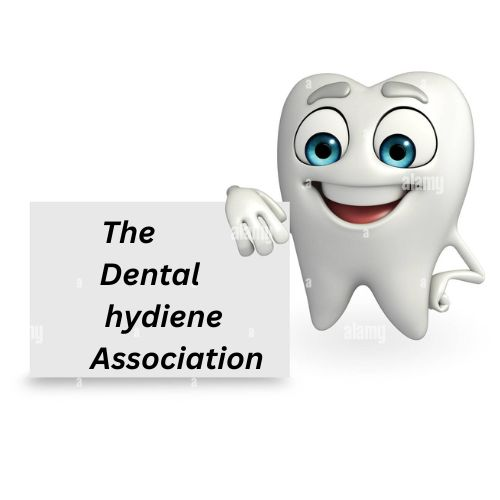
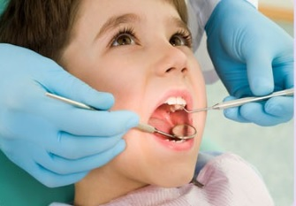

The Dental Hygiene Association
The Dental Hygiene Association

Bringing up your child with proper attention to their oral health is a
lifelong investment in their health, which will benefit them greatly
for the rest of their lives. Early childhood cavities is a disease that
can ruin your child's teeth, even into adulthood, but it is easily
preventable.
There are a wide variety of steps you can take to teach your child
good dental habits, and one of the best is leading by example.
Make sure your child knows how much importance you place on
dental health so they know that it is something to be valued.
Brushing your teeth along with your child and letting them follow
your lead can be really helpful in setting up the habit of teeth
brushing in your child's life.
Even though your child's baby teeth fall out eventually, it is important to take good care of them while they are present. Baby teeth are important for biting, chewing and serve as guidance for the adult teeth which will eventually grow in. Taking proper care
Address: Karachi Pakistan
Location: www.google.com
Email: www.lo********1@gmail.com
Phone : +92 306****620
Asha Ram
Roll No. 254581